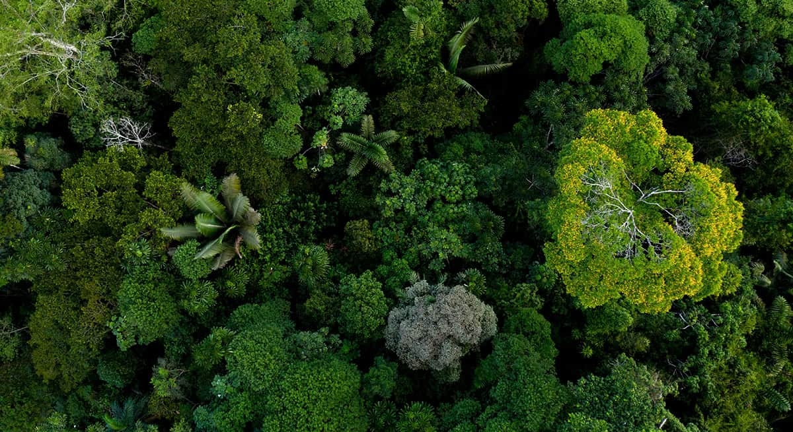

Frutos da Floresta
Frutas, castanhas e raízes enriquecem a dieta indígena
O melhor site sobre a tribo Baniwa!
Os Baniwa são um grupo indígena que habita principalmente a região noroeste da Amazônia, distribuídos entre o Brasil, a Colômbia e a Venezuela. No Brasil, a maior parte da população Baniwa vive no estado do Amazonas, especialmente ao longo do rio Içana, um afluente do rio Negro. Eles fazem parte da família linguística Aruak, que é uma das principais famílias linguísticas indígenas da América do Sul.
A sociedade Baniwa é organizada em clãs patrilineares, ou seja, a descendência e a herança são traçadas pela linha paterna. Cada clã tem suas próprias responsabilidades rituais e sociais, e os casamentos geralmente ocorrem entre membros de clãs diferentes para fortalecer alianças.
A cultura Baniwa é rica em tradições orais, mitos e rituais. Eles têm uma profunda conexão espiritual com a natureza, especialmente com os rios e a floresta, que são considerados sagrados. Os rituais e cerimônias são parte integrante de sua vida cotidiana, muitas vezes envolvendo música, dança e o uso de artefatos cerimoniais.
O artista Denilson Baniwa utiliza projeções a laser e mídias digitais para preservar e expressar a cultura indígena, conectando a arte tradicional com formas modernas e promovendo a visibilidade dos povos originários.
Nas comunidades do médio rio Içana e Ayari, os Baniwa implementam tecnologias que respeitam os saberes ancestrais e visam melhorar a qualidade de vida e promover o desenvolvimento sustentável.
Os Baniwa, em parceria com o IPAM, combinam técnicas tradicionais com práticas científicas na produção de pimenta típica, gerando renda e valorizando o conhecimento ancestral.
Pesquisadores usam inteligência artificial para preservar e revitalizar o Nheengatu, apesar dos desafios pela falta de registros digitais, representando um avanço na preservação cultural.
A Escola Pamáali oferece ensino intercultural, integrando temas como manejo agroflorestal, artes e administração, e conecta os alunos ao mundo digital enquanto mantém os laços com a cultura tradicional.
A medicina tradicional Baniwa, presente no Alto Rio Negro, é baseada em saberes míticos e rituais de cura. Os pajés desempenham um papel central como "guardiões do cosmos", afastando doenças causadas pela bruxaria e feitiçaria. Já os conhecedores de plantas utilizam a flora local para tratar diversas condições de saúde, com remédios naturais como Anu Nisũ para dor de cabeça e Baka Hatu para dor de estômago. Os rituais de cura incluem banhos, defumações e a produção de xaropes e garrafadas.
Para os Baniwa, a saúde é vista de forma coletiva: quando alguém adoece, toda a aldeia é afetada. A terra tem grande importância para a saúde dos povos indígenas, e sua preservação é essencial para garantir a vida. Além disso, a Ayahuasca (Nixi honi xuma) é um elemento importante da medicina espiritual. Mitologias, como a do ser mitológico Kuwai, explicam a origem das doenças e os caminhos para a cura, demonstrando a forte relação entre o bem-estar físico e espiritual dentro da cosmovisão Baniwa.
Frutas, castanhas e raízes enriquecem a dieta indígena
Para os Baniwa, a natureza é vista como uma entidade viva e interconectada, com práticas sustentáveis que preservam a biodiversidade e os ecossistemas.
O projeto "Arte Baniwa" utiliza o arumã para criar cestos e utensílios, respeitando os ciclos naturais, o que fortalece a economia comunitária e valoriza o conhecimento tradicional.
A Escola Pamáali integra a cultura indígena no currículo, abordando ética, saúde e sustentabilidade com base nos saberes tradicionais, contribuindo para a preservação da identidade Baniwa.
O conceito de "Bem Viver" (Matsiakaro Wemaka) promove o equilíbrio entre ser humano e natureza, propondo uma alternativa ao individualismo e ao consumo excessivo da sociedade moderna, com foco em uma convivência mais justa e sustentável.
A exploração mineral, rodovias e invasões garimpeiras ameaçam a subsistência dos Baniwa, que dependem da agricultura e pesca.
A falta de acesso a saúde, educação e saneamento, além da escassez de professores indígenas qualificados, dificulta o desenvolvimento da comunidade, especialmente nas áreas mais remotas.
O racismo, a discriminação e a falta de respeito pelos direitos das mulheres Baniwa limitam oportunidades e o acesso à saúde, educação e proteção contra violência, além de afetarem sua participação plena na sociedade.
Influências externas, como o cristianismo, podem levar à perda de rituais e práticas culturais tradicionais.
O endividamento com patrões extrativistas resulta em problemas sociais, como trabalho forçado e dificuldades de acesso a bens industrializados.